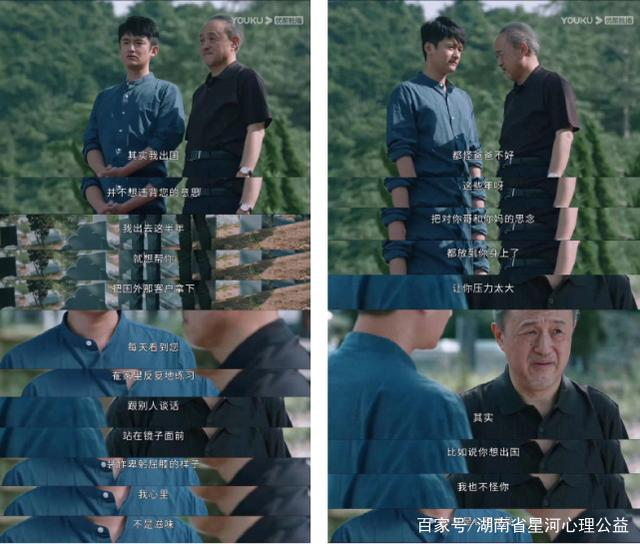
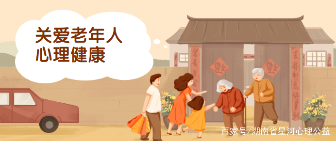

关爱老年人 带来一抹心中的阳光
【来源】：互联网
《女心理师》播出后，“空巢老人”故事单元引热议，星河君追完这篇章后，也陷入了深思中……

剧中的父亲因为年老，儿子出国让父亲孤单落寞，从而产生了心理失调，惊恐多疑等各种心理问题。最终在女心理师贺顿的心理引导下，父子二人敞开心扉，走向坦白与和解。 然而现实生活中，老年人心理健康问题也是不容忽视的！老年人的健康不仅包括身体各方面生理机能的健康，还包含在基本认知、记忆、情绪、社会交往等多方面的心理健康。
老年人的心理特征
1.认知能力低下 中老年人身体机能衰退，大脑功能发生改变，中枢神经系统递质的合成和代谢减弱，导致感觉能力降低，意识性差，反应迟钝，注意力不集中等。主要表现两个方面，首先是感觉迟钝，听力、视觉、嗅觉、皮肤感觉等功能减退，而致视力下降，听力减退，灵敏度下降；其次是动作灵活性差，动作不灵活，协调性差，反应迟缓，行动笨拙。 2.孤独和依赖 孤独和依赖孤独是指老年人不能自觉适应周围环境，缺少或不能进行有意义的思想和感情交流。孤独心理最易产生忧郁感，长期忧郁就会焦虑不安，心神不定。依赖是指老年人做事信心不足，被动顺从，感情脆弱，犹豫不决，畏缩不前等，事事依赖别人去做，行动依靠别人决定。长期的依赖心理，就会导致情绪不稳，感觉退化。 3.焦虑 焦虑失调是老年心理疾病的重要成因和表现之一。有些老年人总是心烦意乱，坐卧不安，为一点小事而提心吊胆，紧张恐惧。这种现象在心理学上叫作焦虑，严重者称为焦虑症。一般可分为三类：现实性或客观性焦虑、精神过敏性焦虑及道德性焦虑。 4.抑郁 老年抑郁症是常见的老年人心理疾病，其临床表现为：情绪压抑、沮丧、痛苦、悲观、厌世、自责、甚至出现自杀倾向或自杀行为，食欲下降，失眠早醒等。老年人抑郁的后果极其严重，甚至有可能危及生命，由于抑郁是长期情绪低落的结果，因而很容易引发心肌梗塞、高血压、冠心病和癌症等身体疾病。 5.睡眠障碍 中老年人由于大脑皮质兴奋和抑制能力低下，造成睡眠减少，睡眠浅、多梦、早醒等睡眠障碍，容易导致中老年人罹患某些精神障碍性疾病，如抑郁症、神经衰弱等。
影响老年人心理健康的因素
1.衰老和疾病 人到60岁以后，会发生一系列生理和心理上的退行性变化，体力和记忆力都会逐步下降。这种正常的衰老变化使老年人难免有“力不从心”的感受，并且带来一些身体的不适和痛苦。因此，一部分老年人就会产生忧愁、烦恼、恐惧心理。 2.精神创伤 人到老年，会面临各种无法回避的变故，如老伴、老友去世，身体衰老、健康状态每况愈下等。精神创伤对老年人的生活质量、健康水平和疾病的疗效有重要影响，有些老年人因此陷入痛苦和悲伤中不能自拔，久而久之必将有损健康。 3.环境变化 老年人对周围环境的突然变化，以及社会和家庭人际关系的影响往往不容易适应，从而引发老孤独感、无用感的心理。

针对老年人出现的心理问题，如何防御呢？其实不仅需要从老年人自身出发，家庭关爱和社会关爱也是必不可少的。作为老年人，保持积极乐观的心态很重要，同时也不要忘记多出门走走，培养自身的兴趣爱好呀。作为家人，陪伴和积极的交流关爱是治愈老年人心理健康问题的“良药”！而从社会层面出发，建设老年人娱乐场所和开展有意义的老年活动也能带给老年人一抹心中的阳光。
“老吾老以及人之老”，愿每一位老年人都笑容相伴，也呼吁大家关爱老年人，从“心”开始。
浏览量：33

- 联系
我们

工作日：
早9:00-晚18:00
杨老师：
400-888-8888